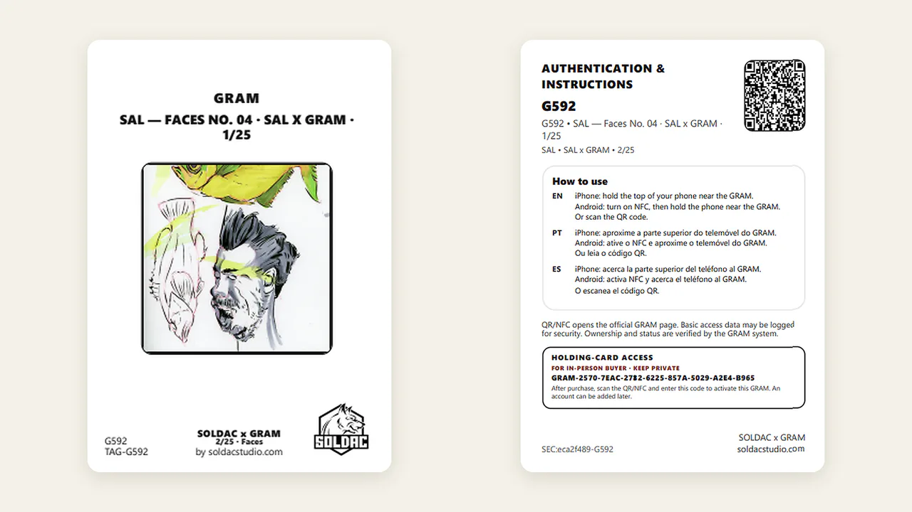
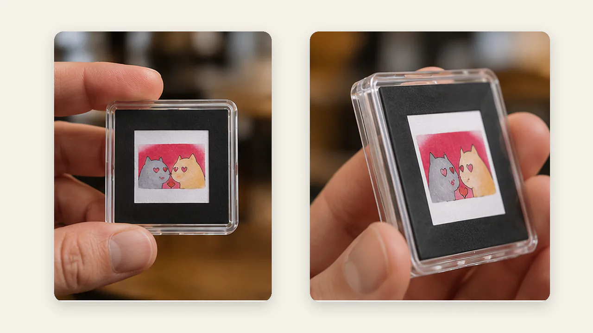

Pieza Física y Entrega
Cómo se relacionan la propiedad digital y la pieza del mundo real durante claims y transferencias.
Propiedad digital
La propiedad digital es el estado de la plataforma que muestra a qué cuenta está vinculada una GRAM.
La pieza física
La pieza física es el objeto real asociado a esa GRAM.
Por qué importan ambas
Los claims y las transferencias pueden actualizar la propiedad digital en la plataforma, pero la posesión en el mundo real sigue siendo aparte. Si la pieza física cambia de manos, esa entrega también debe ocurrir en la vida real cuando corresponda.
Guía visual

